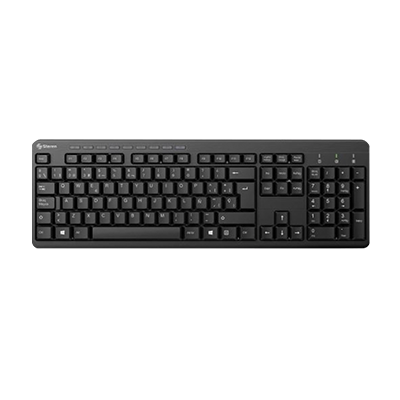

Teclado:
Imagem de como um Teclado se parece:

O teclado é um dos mais importantes por aqui, afinal a função dele é basicamente escrever, ou até
ter contato com o sistema via texto ou digitando comandos (Tipo quando você está na BIOS modificando a BIOS para colocar o
Secure Boot)